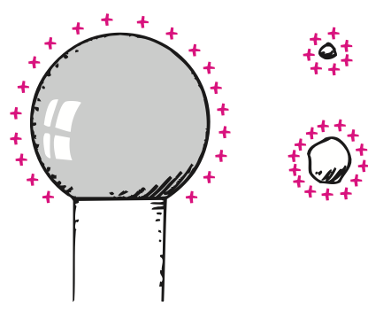
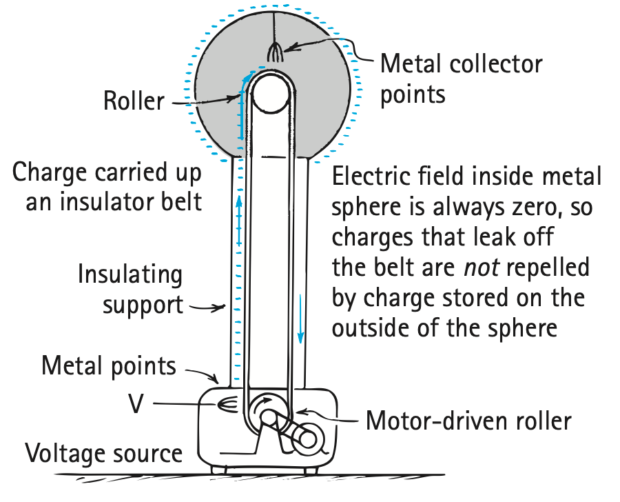

Electric Potential
When we studied energy in Chapter 7, we learned that an object has gravitational potential energy because of its location in a gravitational field. Similarly, a charged object has potential energy (PE) by virtue of its location in an electric field. Just as work is required to lift a massive object against the gravitational field of Earth, work is required to push a charged particle against the electric field of a charged body. This work changes the electric potential energy of the charged particle.7 Consider the particle with the small positive charge located at some distance from a positively charged sphere in Figure 22.22b. If you push the particle closer to the sphere, you will expend energy to overcome electrical repulsion; that is, you will do work in pushing the charged particle against the electric field of the sphere. This work done in moving the particle to its new location increases its energy. We call the energy the particle possesses by virtue of its location electric potential energy. If the particle is released, it accelerates in a direction away from the sphere, and its electric potential energy changes to kinetic energy.

If we instead push a particle with twice the charge, we do twice as much work pushing it, so the doubly charged particle in the same location has twice as much electric potential energy as before. A particle with three times the charge has three times as much potential energy, and so on. Rather than dealing with the potential energy of a charged particle, it is convenient, when working with charged particles in an electric field, to consider the electric potential energy per unit of charge. The unit of electric charge is the coulomb, so we consider the electric potential energy per coulomb of charge. Then at any location the electric potential energy per coulomb will be the same—for however much charge. For example, an object with 10 coulombs of charge at a specific location has 10 times as much electric potential energy as an object with 1 coulomb of charge.

But 10 times as much electric potential energy for 10 times as much charge gives the same value as the electric potential energy per 1 coulomb of charge. The electric potential energy per unit of charge has a special name, electric potential:
Electric potential = electric potential energy / charge

The unit of measurement for electric potential is the volt, so electric potential is often called voltage. A potential of 1 volt (V) equals 1 joule (J) of energy per 1 coulomb (C) of charge:
1 volt = 1 joule / coulomb
Thus, a 1.5-volt battery gives 1.5 joules of energy to every 1 coulomb of charge passing through the battery. Both the names electric potential and voltage are common, so either may be used. In this text, the names will be used interchangeably.
Electric potential (voltage) plays the same role for charge that pressure does for fluids. When a pressure difference exists between two ends of a pipe filled with fluid, the fluid flows from the high-pressure end toward the lower-pressure end. We will see in Chapter 23 that charges respond to differences in potential in a similar way.
If you rub a balloon on your hair, the balloon becomes negatively charged—perhaps to several thousand volts! That would be several thousand joules of energy, if the charge were 1 coulomb. However, 1 coulomb is a very large amount of charge. The charge on a balloon rubbed on hair is more typically much less than a millionth of a coulomb. Therefore, the amount of energy associated with the charged balloon is very, very small. A high voltage means a lot of energy only if a lot of charge is involved. There is an important difference between electric potential energy and electric potential.

Electric Energy Storage
Electric energy can be stored in a common device called a capacitor. The simplest capacitor is a pair of conducting plates separated by a small distance but not touching each other. When the plates are connected to a charging device, such as the battery shown in Figure 22.26, electrons are transferred from one plate to the other. This occurs as the positive battery terminal pulls electrons from the plate connected to it. These electrons, in effect, are pumped through the battery and through the negative terminal to the opposite plate. The capacitor plates then have equal and opposite charges—the positive plate connected to the positive battery terminal, and the negative plate connected to the negative terminal. The charging process is complete when the potential difference between the plates equals the potential difference between the battery terminals—the battery voltage. The greater the battery voltage, and the larger and closer the plates, the greater the charge that can be stored. In practice, the plates may be thin metallic foils separated by a thin sheet of paper. This “paper sandwich” is then rolled up to save space and inserted into a cylinder. Such a practical capacitor is shown with others in Figure 22.28.

Figure 22.27 was omitted because no matching captured image was supplied.
Figure 22.28 was omitted because no matching captured image was supplied.
Capacitors are found in nearly all electronic circuits. A capacitor stores energy in common photoflash units. The rapid release of this energy is evident in the short duration of the flash. Likewise in a defibrillator, where short bursts of energy are applied to a heart attack victim. Similarly, but on a grander scale, enormous amounts of energy are stored in banks of capacitors that power giant lasers in national laboratories.
The energy stored in a capacitor comes from the work required to charge it. Discharging a charged capacitor can be a shocking experience if you happen to be the conducting path. The energy transfer that occurs can be fatal where high voltages are present, such as the power supply in a TV set—even after the set has been turned off. This is the main reason for the warnings on such devices. The energy is stored in the electric field between its plates. Between parallel plates, the electric field is uniform, as indicated in Figure 22.18c. So the energy stored in a capacitor is the energy of its electric field. In Chapter 23, we’ll consider the role of capacitors in electric circuits. Then in Chapters 25 and 26, we will see how energy from the Sun is radiated in the form of electric and magnetic fields. The fact that energy is contained in electric fields is truly far-reaching.
Van de Graaff Generator
Figure 22.29 was omitted because no matching captured image was supplied.
A common laboratory device for producing high voltages and creating static electricity is the Van de Graaff generator, invented by American physicist Robert J. Van de Graaff in 1931 to supply the high voltage needed for early particle accelerators. These accelerators were known as atom smashers because they accelerated subatomic particles to very high speeds and then “smashed” them into the target atoms. The resulting collisions could knock protons and neutrons out of atomic nuclei and create high-energy radiation such as X-rays and gamma rays. The ability to create these high-energy collisions is essential for particle and nuclear physics.
Van de Graaff generators are also the lightning machines that mad scientists used in old science-fiction movies. A classroom model of a Van de Graaff generator provides the static charge that makes Lillian’s hair stand out in Figure 22.29.
Figure 22.30 shows the interior of a simple model of the generator. A hollow metal sphere is supported by a cylindrical insulating stand. A motor-driven rubber belt inside the support stand passes by a comblike set of metal tips that are maintained at a large negative potential relative to ground. Discharge by the tips deposits a continuous supply of electrons on the belt, which are carried up into the hollow conducting sphere. Since the electric field inside the sphere is zero, the charge is not prevented from leaking onto the metal points (tiny lightning rods) inside the sphere. The electrons repel one another to the outer surface of the sphere, just as static charge always lies on the outside surface of any conductor. This leaves the inside uncharged and able to receive more electrons as they are brought up by the belt. The process is continuous, and the charge builds up until the negative potential on the sphere is much greater than at the voltage source at the bottom—on the order of millions of volts.
A sphere with a radius of 1 m can be raised to a potential of 3 million V before electrical discharge occurs through the air. The voltage can be further increased by increasing the radius of the sphere or by placing the entire system in a container filled with high-pressure gas. Van de Graaff generators can produce voltages as high as 20 million V. Touching one can be a hair-raising experience.
